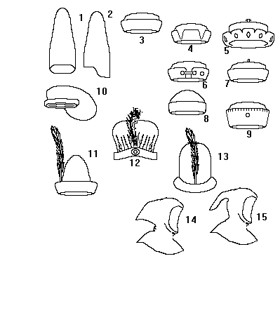

English hats

- A Sugarloaf Hat (c1470)
- A Sugarloaf Hat
- (c1260)
- (c1325-1350); (c1450)
- (c1210- )
- Milan or Tudor Bonnet (c1470-1500)
- (c.1260)
- Calotte or Cap, variations of this exist from 1200 to 1500
- (c1470-1480)
- Bag Cap (15th Century)
- A short Sugarloaf, often worn with Hood (14th Century)
- (c1380)
- (c1475)
- Hood (pre-13th Century)
- Hood (post-13th Century)
Some Headwear of the Middle Ages - English Hats, by I. Marc Carlson. Copyright
1996.